রাজবৃত্তান্ত 🚃
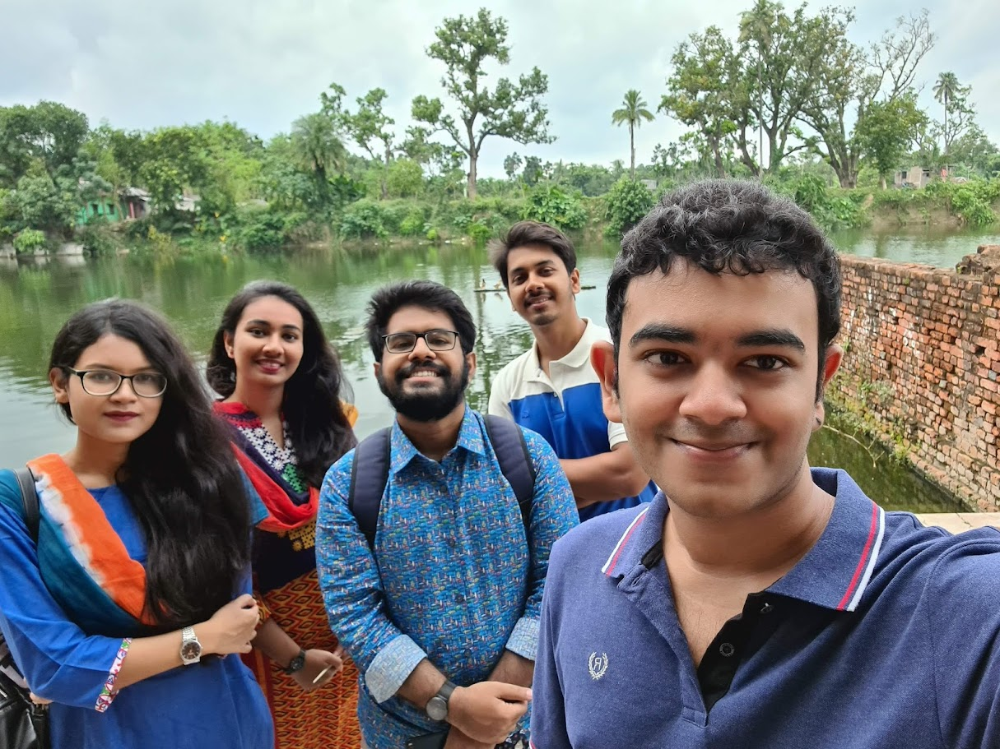
সপ্তাহখানেক আগেই আসলাম রাঙামাটি থেকে। এসেই যে আরেকটা ট্যুর হয়ে যাবে ভাবিনি। যাওয়ার কথা ছিল উডহাউজে পরেরদিন। কিন্তু হঠাৎ করেই পূজার বন্ধের জন্য ফ্যামিলির সাথে বগুড়া যাওয়ার প্ল্যান হয়। তো যেহেতু ঐদিকে যাচ্ছি ই, ভাবলাম অপূর্বর বাসায় একদিন থেকে আসি নওগাঁ থেকে। উডহাউজে যেতে না পারার জন্য নকশীকে যখন ওর বদ দোয়ার জন্য বকতেসিলাম আর এই প্ল্যানের কথা বলতিসিলাম তখন ও বললো ঐদিকে যেহেতু যাচ্ছি ই তাহলে রাজশাহীতেও যেন আসি। এভাবেই রাজশাহী যাওয়ার প্ল্যান হয়। শুরুতে কথা ছিল একদিন ই থাকবো। কিন্তু হঠাৎ করেই আম্মুরা বগুড়া থেকে একদিন আগে ফিরে আসায় আর ফেরার ট্রেনের টিকিট কেটে ফেলায় সেটা হয়ে যায় দুই দিনের ট্যুর।
বগুড়া থেকে নওগাঁ গিয়ে থাকলাম একদিন। যাওয়ার জায়গা বলতে শুধু পাহাড়পুর। পাহাড়পুর ঘুরে পরেরদিন সকালে রওনা দেই রাজশাহীর উদ্দেশ্যে।
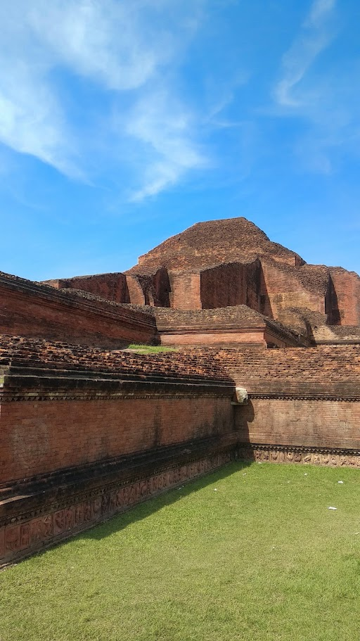
পাহাড়পুর
পৌঁছাতে পৌঁছাতে বেজে গেল বারোটা। বন্ধু নাসিফের বাবার হোটেল থাকার সুবাদে ফ্রিতেই থাকার বন্দোবস্ত হয়ে গেল একদিনের। বাস থেকে নেমে হোটেলে উঠার আগে গেলাম নকশীর বাসার দিকে, বগুড়া থেকে ওর জন্য আনা দই পৌঁছে দিতে। গোলচত্বরে নকশীকে দই দিয়ে আমরা হোটেলের দিকে আগাই। প্রায় ১৯ মাস পর নকশীর সাথে দেখা। যাদের সাথে আগে প্রতিদিন দেখা হতো, তাদের কতজনের সাথেই দেখা নাই দুই বছর ধরে। করোনা এসে স্পেস-টাইমের ফ্যাব্রিক সবকিছু ওলট পালট করে দিল।
হোটেলে ফ্রেশ হয়ে আমরা দুপুরে খেতে রওনা দেই রেস্টুরেন্টে। দুপুরের খাওয়া শেষে অটোতে করে রাজশাহী ভার্সিটির দিকে রওনা দেই আমি, নকশী, অপূর্ব আর নাফিজ। যেতে যেতে নকশীর কমেন্ট্রিতে চিনলাম রাজশাহীর নিউ মার্কেট, জিরো পয়েন্ট। জিরো পয়েন্ট দিয়ে সামনে আগাতেই সাহেব বাজার রোডে দেখলাম সব বাড়ি ভেঙে নতুন রাস্তার কাজ হচ্ছে। কোনো বাড়ি পুরোটাই ভাঙ্গা, আবার কোনোটা অর্ধেক। ১০ মিনিটের অটোর রাইড শেষে পৌঁছে গেলাম রাজশাহী ভার্সিটিতে। ওখানে আমাদের সাথে যুক্ত হলো নাহিয়ান। ঢুকতেই রাজশাহী ভার্সিটির স্কুল আর টিচারদের কোয়ার্টার (পশ্চিম পাড়া)। পার হয়েই শুরু বিখ্যাত প্যারিস রোড। আমি আগে ভাবতাম এটা মনেহয় আলাদা কোনো রাস্তা। কিন্তু এখন দেখি ভার্সিটির ভিতরেই। আগে যখন ছবি দেখসি, তখন ফুটপাথ ছিল না। এখন দুইপাশে ফুটপাথ করে রাস্তার সৌন্দর্য কিছুটা কমে গেছে, সাথে ছোট ও হয়ে গেছে। প্যারিস রোড দিয়ে হাঁটতে হাঁটতে একপাশে জুবেরী ভবনের মাঠ, অন্য পাশে স্কুলের মাঠ। একটু সামনে আগালেই অদ্ভুত নামের ইবলিশ চত্বর। নামকরণের ইতিহাস জানতে গিয়ে জানা গেল অনেক মানুষ এখানে আড্ডা দিত। সেখান থেকেই নাকি এই নামের উৎপত্তি। সামনে হাঁটতে হাঁটতে দেখলাম আর্টস বিল্ডিং, ডিনস কমপ্লেক্স, সাইন্স বিল্ডিং। আর্টস বিল্ডিং দেখতে বেশ সুন্দর।
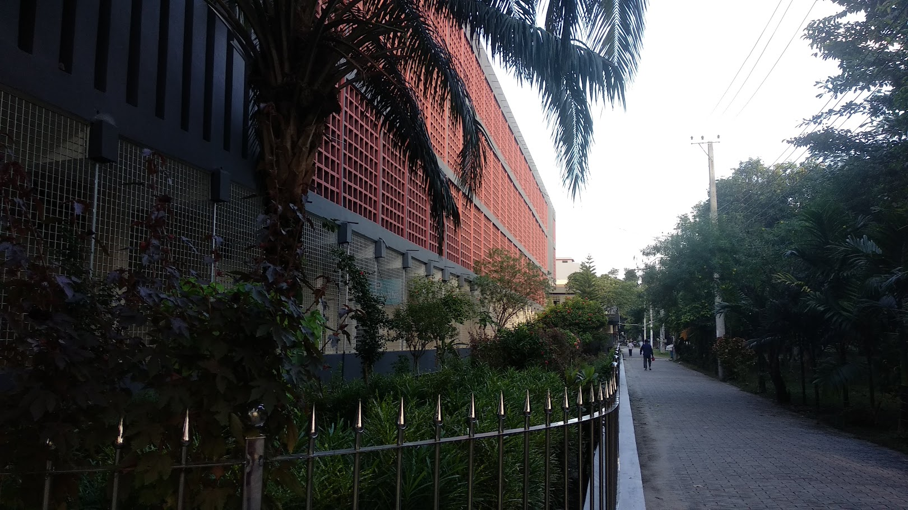
আর্টস বিল্ডিং
সামনেই সেন্ট্রাল লাইব্রেরি। লাইব্রেরি বেশ বড়। আর কয়েকদিন পরেই ভার্সিটি খুলবে। হল খুলে দেওয়ায় ভার্সিটিতে মানুষ বেশ ভালো পরিমাণ ই। রাজশাহী ভার্সিটির মসজিদ আর শহীদ মিনার দেখে আমরা রিকশা তে উঠে পরলাম। ক্যাম্পাসের বাকি অংশ দেখবো। রাজশাহী ভার্সিটির জায়গা বিশাল। রিকশাতে করে অনেকক্ষন ঘুরার পরও অর্ধেক ও দেখা শেষ হয়না এমন অবস্থা। অনেক অনেএএক কিছু ভার্সিটির ভিতরে। বোটানিক্যাল গার্ডেন থেকে শুরু করে মাছ চাষের পুকুর, কি যে নাই। সাথে নকশী, নাহিয়ান আর রিকশাওয়ালা মামার কমেন্ট্রি। অনেক জায়গা চিনাইসিল যার অর্ধেক অবশ্য এতদিনে ভুলে গেছি 😂 বধ্যভূমি দেখতে দেখতে সন্ধ্যা নেমে আসল।

বধ্যভূমি
ভার্সিটি ক্যাম্পাসেই টুকটাক কিছু খেয়ে নকশী আর নাহিয়ান বাসায় চলে গেলো। আমি, অপূর্ব, উৎস আর নাফিজ মিলে গেলাম মালাই চা খেতে। খাওয়া শেষে হোটেলে ফিরে আসলাম। রাতে পাশের হোটেলে পরোটা আর মুরগি খেয়ে হালকা জ্বর নিয়ে ঘুম দিলাম। শেষ হলো প্রথম দিনের ঘোরা।
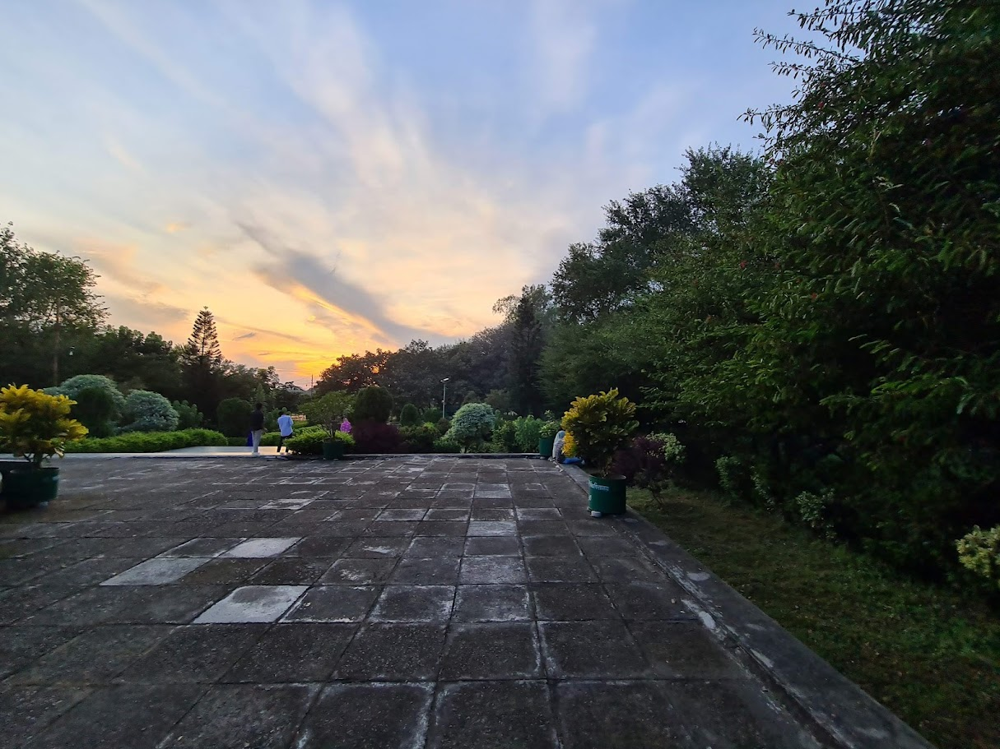
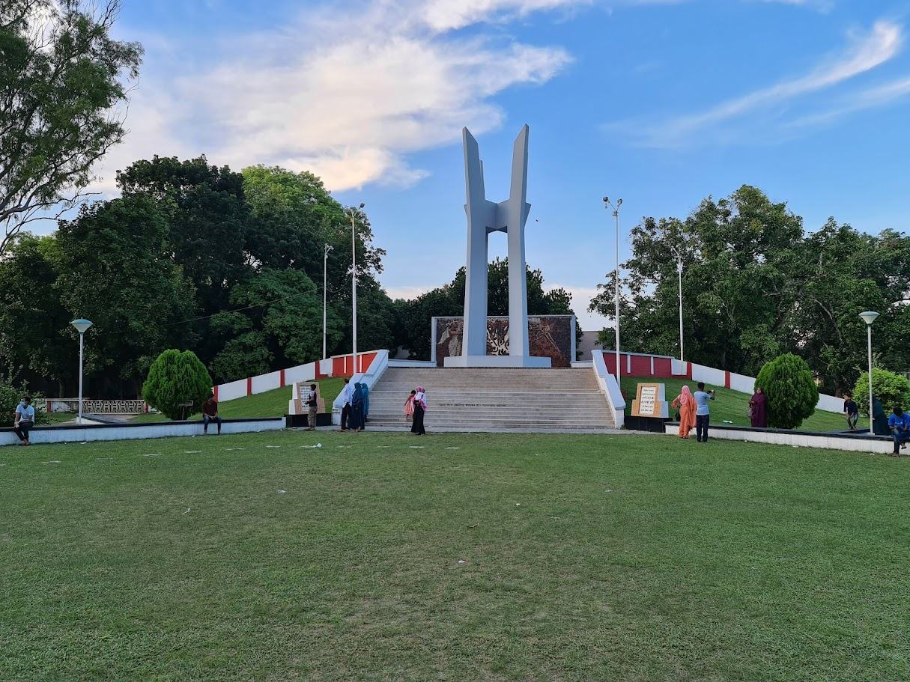
পরের দিনের প্রথম গন্তব্য রাজবাড়ি। সকালে খিচুড়ি ডিমভাজি খেয়ে নকশীর বাসায় ব্যাগ রেখে গাড়িতে করে রওনা দিলাম আমরা রাজবাড়ির উদ্দেশ্যে। বাসে ঘন্টাখানেকের পথ। নেমে উঠতে হয় ভ্যানে। ১০ মিনিটের ভ্যান যাত্রা শেষে আমরা পৌঁছে গেলাম রাজবাড়িতে। বেশ পুরোনো আমলের হিন্দু রাজাদের রাজপ্রাসাদ।
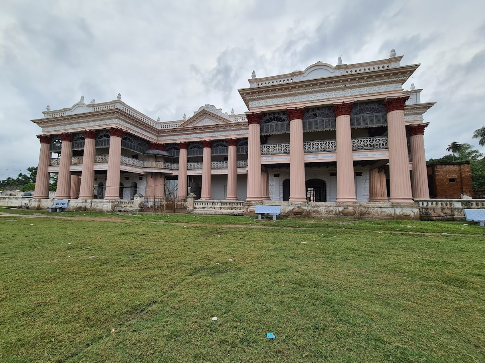
রাজবাড়ি
চারিদিকে পুকুর যাতে শত্রুপক্ষ সহজে আক্রমণ করে বসতে না পারে। পুকুরে রানীর গোসলের জন্য আলাদা ঘাট। পুরোনো সেই ঘাট অবশ্য এখন সব ভেঙে গেছে। পুকুরের মাঝে দিয়ে মাছ ধরার জাল দেখা যায়। পুকুরের ঘাট থেকে আমরা রাজবাড়ির ভিতরের দিকে আগালাম।
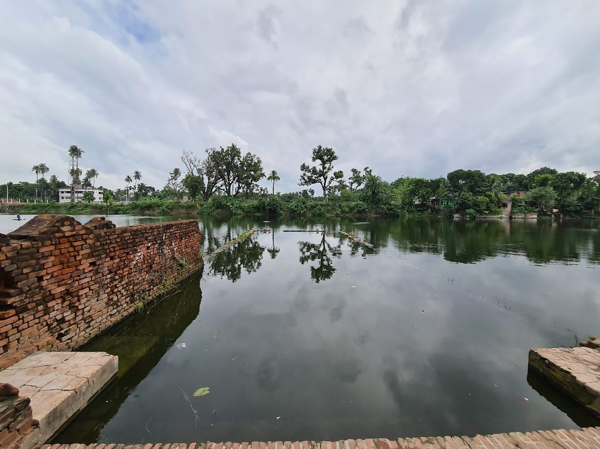
পুকুর ঘাট
পুকুর থেকে ভিতরে ঢুকতেই রানীর পূজার জন্য আলাদা মন্দির। ভিতরে আরো কতগুলা মন্দির এরকম।আমাদের সাথে একই সময়ে কয়েকজন জজ ঘুরতে আসছে, সাথে আবার পুলিশ। সাধারণত রাজবাড়ির মেইন প্রাসাদের ভিতরে ঢুকতে দেয়না। কিন্তু তারা থাকার সুবাদে তাদের পিছনে পিছনে আমরাও উপরে উঠে গেলাম।
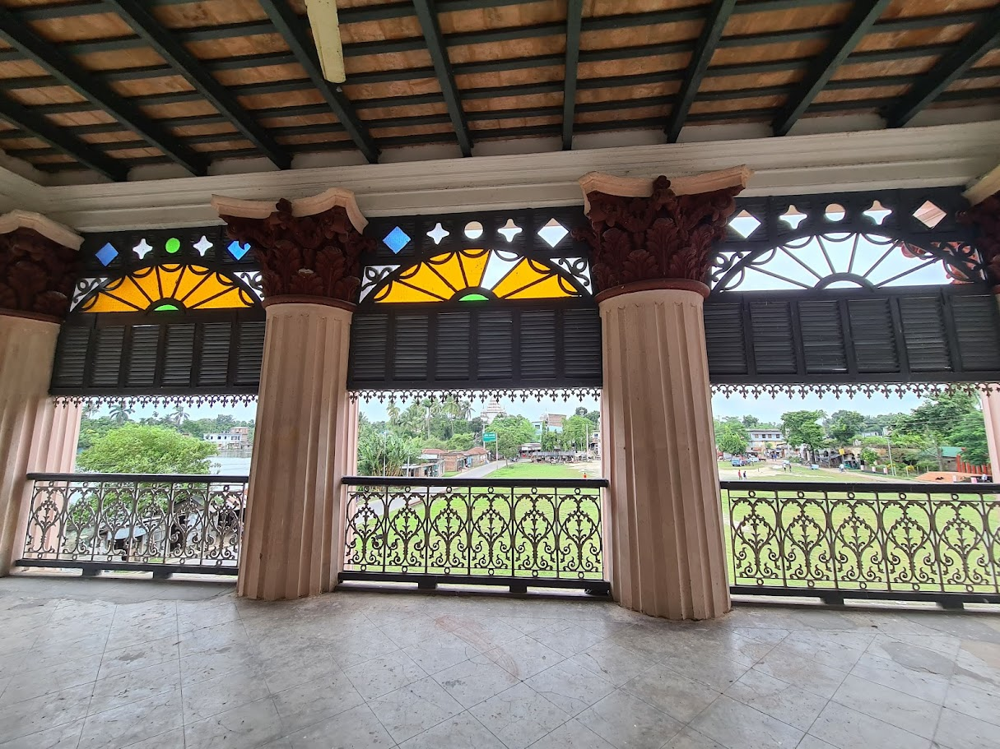
রাজবাড়ির ভেতরে
ভেতরে দেখলাম মিজিয়াম বানানোর কাজ হচ্ছে, এখনও শেষ হয়নি। শেষ হলে মনেহয় সবার জন্য খুলে দিবে। সেখান থেকে উপরে ছাদে গেলাম। বেশ সুন্দর উপর থেকে, আশেপাশের সব মন্দির গুলো দেখা যায় একবারে, সাথে দূরের পুকুর। পাশের এক মন্দিরের পিছনে পুকুরপাশে আমরা বসে বেশ খানিকক্ষণ গল্প করলাম। ঘণ্টা দুয়েকের রাজবাড়ি সফর শেষে আমরা দুপুরের খাবারের জন্য কাটাখালির বিখ্যাত কালাভুনা খেতে রওনা দেই।
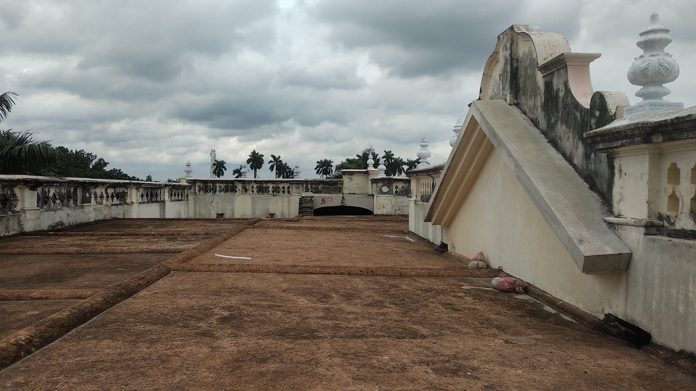
রাজবাড়ির ছাদ
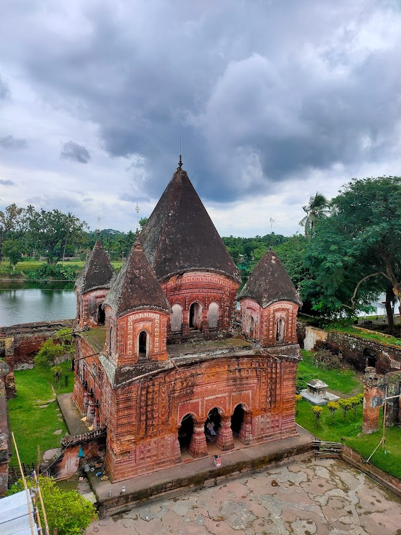
ছাদ থেকে ভিউ
প্রথমে লেগুনা, এরপর নেমে অটো। অটোতে উঠতেই মুষলধারে বৃষ্টি শুরু হলো। নকশীর কাছ থেকে আগেই নিয়ে রাখা ছাতা বেশ কাজে লাগলো এখন। কোনমতে দুইপাশে ছাতা দিয়ে আমরা কাটাখালির দিকে আগাতে থাকি। কিন্তু পথ যেন শেষ হতে চায়না। বৃষ্টির ছাঁটে আমি ভিজে পুরা শেষ। শেষমেষ আধাঘন্টা পরে আমরা পৌঁছাই কাটাখালি। ততক্ষনে বৃষ্টি একটু কমে আসছে। ইব্রাহিম হোটেলে ঢুকে পড়লাম আমরা দৌড় দিয়ে। উৎস আর অপূর্ব নিল খাসির ভুনা, বাকিরা গরুর কালাভুনা। অবশ্য ওটা খাসি ছিল নাকি সেটা একটা গবেষণার বিষয় 😂 অপূর্বর মতে কুকুরের মাংস 😂 গরুর কালাভুনা আহামরি ছিলনা কিন্তু ভালোই, ভাবসিলাম আরেকটু অন্যরকম হবে। তো সে যাইহোক, কাটাখালির কালাভুনা খেয়ে আমরা অটো তে করে রওনা দিলাম শহরের দিকে।
দুই দিন প্রায় হয়েই গেছে কিন্তু এখনও পদ্মা দেখা হয়নাই 😂 অটো কিছুদূর গিয়ে নামায়ে দিল। সেখান থেকে রিকশায় করে রাজশাহী কলেজের দিকে আগাই আমরা। রিকশায় আমার সাথে নকশী। ও খুব সুন্দর করে শহর চেনাতে পারে গল্প বলতে বলতে। দুই দিন ধরেই ব্যাপারটা অনেক ভালো লাগছে। ওর কাছ থেকে শুনলাম কিভাবে পুরোনো জুয়েলারির মার্কেট উঠায়ে দিয়ে নতুন মার্কেট করে ফেলছে নতুন মেয়র। রাস্তায় দেখলাম বেশ কতগুলো নতুন মার্কেট হচ্ছে। সবমিলিয়ে বুঝা যায় রাজশাহী ধীরে ধীরে ঢাকার মতো মেট্রোপলিটন সিটি হয়ে যাচ্ছে। কিছুক্ষণের মধ্যে আমরা পৌঁছে গেলাম রাজশাহী কলেজে। কিন্তু আমাদেরকে কোনোমতেই ঢুকতে দিবেনা যেহেতু এখনও কলেজ খুলেনি। একটু পরেই শুরু হলো মুষলধারে বৃষ্টি। বৃষ্টির মধ্যেই আমরা গার্ডের চোখ ফাঁকি দিয়ে ঢুকে পরি 😂 রাজশাহী কলেজের ক্যাম্পাস বিশাল বড়। প্রায় বুয়েটের সমান। নাসিফের বাইকে করে কলেজের ক্যাম্পাস পুরাটা ঘুরে দেখলাম।
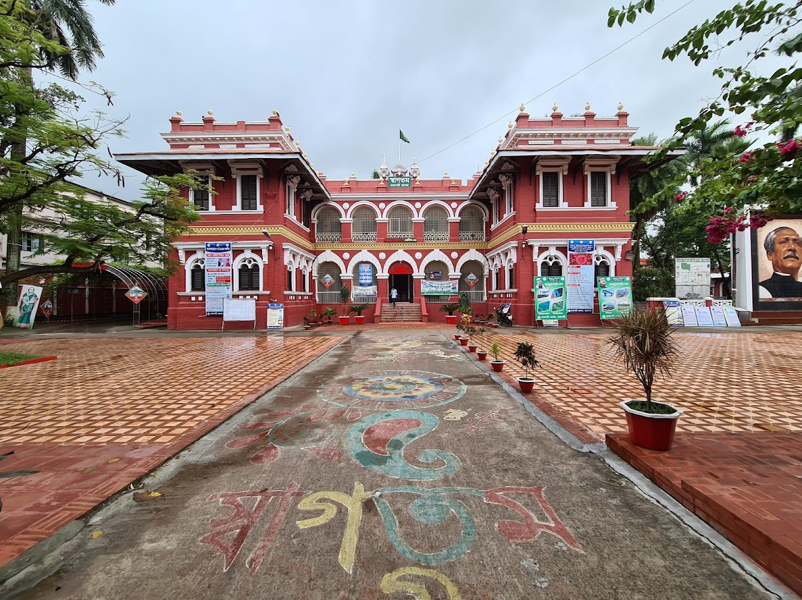
রাজশাহী কলেজ
সেখান থেকে অবশেষে পদ্মা দেখতে রওনা দেই টি বাঁধের দিকে। বাঁধ দেখতে টি শেপের, তাই এই নাম। কিন্তু গিয়ে দেখি আবহাওয়া বেশ খারাপ। নদীতে স্রোত অনেক বেশি, সাথে পুরো আকাশ মেঘ। নদীর এই অবস্থায় নৌকায় উঠা বেশ রিস্কি। তাই আর উঠা হলোনা।
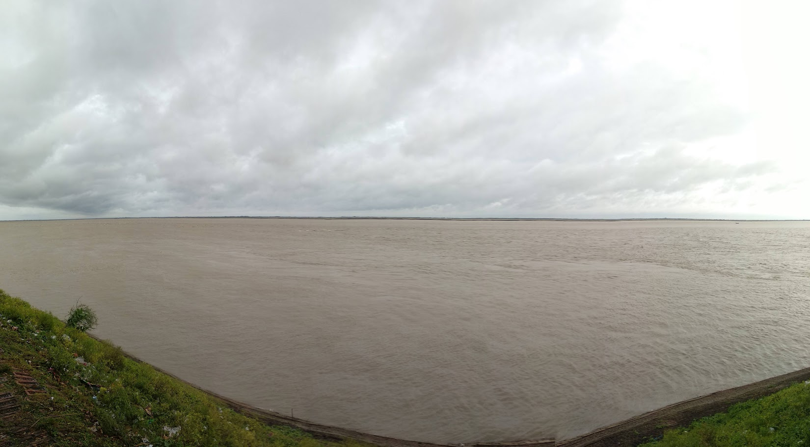
পদ্মা
ওখানেই বেশ খানিকক্ষণ নদীর পাড়ে বসে থেকে কিছু ছবি তুলে আমরা যাই সিএনবির মোড়ে। ওখানকার মিষ্টি নাকি বেশ ভালো। তার আগে ঐ সিএনবির মোড়েই ডাবল শিকের বার্গার খাওয়া হলো। রাজশাহীতে স্ট্রিট ফুড যা খাওয়া হলো এবার, তার মধ্যে এটাই সবচেয়ে মজা লাগল। আরেকবার আসলে এটা অবশ্যই আবার খাবো। বর্গারের দোকানের পাশেই মিষ্টির দোকান। একদম গরম রসগোল্লা ভেজে সাথে সাথেই দিচ্ছে। অনেক মানুষের ভিড়। বসার জায়গা নাই এমন অবস্থা। দাড়িয়ে থেকেই আমরা খেয়ে নিলাম মিষ্টি। বেশ ভালোই ছিল।
সন্ধ্যা নেমে আসছে। রাতে নকশীর বাসায় দাওয়াত। আমরা অটোতে করে রওনা দেই নকশীর বাসা, পদ্মা আবাসিকের দিকে। মিনিট ১৫ এর পথ। রাজশাহী শহর বেশ ছোট। এই দুই দিনে শহরের মধ্যের সব জায়গা ই ১০-১৫ মিনিটের রাস্তা। নকশীর বাসায় গিয়ে ফ্রেশ হয়ে নিয়ে লুডু খেলতে বসে গেলাম আমরা, সাথে নকশীর ছোট বোন স্নাতা। লুডু খেলতেই ঘন্টাখানেকের বেশি পার হয়ে গেলো। ৯ টার দিকে আমরা খেতে বসলাম। সে বিশাল আয়োজন। পোলাও, রোস্ট, খাসি, ডিম, সবজি আর সাথে কাজু বাদামের সালাদ। এদিকে ৭ দিন ধরে টানা পোলাও রোস্ট খাওয়া আমি। খুব বেশি তাই খেতে পারলামনা মাংস। বরং কাজু বাদামের সালাদ আর সবজি দিয়েই বেশি খেলাম। কাজু বাদামের সালাদ এমনিতেই আমার প্রিয়, আর বেশ মজা হওয়ায় ঐটাই বেশি খাওয়া হলো। কাজু বাদামের সালাদ ছিল নকশীর করা। খাবারের পর নকশীর আম্মু আমাদেরকে দই দিলেন, বগুড়া আর রাজশাহীর। আমি যেহেতু রাজশাহীর দই খাইনি, তাই ওটাই টেস্ট করলাম। বগুড়ার দই এর তুলনায় রাজশাহীর দই একটু কম মিষ্টি। এত খাওয়াদাওয়া করে যখন পেট পুরা ভরা, তখন আন্টি কেক নিয়ে আসলেন। নকশীকে আসার আগে বলসিলাম যে ওর হাতের ডেজার্ট খাবো 😂 ও সত্যি সত্যি ই রান্না করে ফেলছে। মাড কেক। ডার্ক চকোলেট এর। মজা ছিল অনেক। অতিরিক্ত খেয়ে আমি ততক্ষনে পুরো শেষ 😂 কিছুক্ষণ পরে আন্টি আমাদেরকে ছাদে নিয়ে গেলেন। নকশীদের ছাদ অনেএএক সুন্দর 🥺 বাসার চারপাশে তেমন উচুঁ বিল্ডিং নাই। উপরের ছাদ থেকে পুরো শহর দেখা যায়। অনেএএক সুন্দর ভিউ, সাথে ঠান্ডা বাতাস। আবার স্টেশনের ট্রেনের শব্দ ও আসে দুর থেকে। আন্টির সাথে আমরা কিছক্ষন গল্প করলাম, সাথে কিছুক্ষণ হাঁটাহাঁটি করে আমরা নেমে আসি। নিচে নেমে ব্যাগ নিয়ে আমরা আন্টিকে বিদায় জানিয়ে নিচে নেমে পড়ি। নকশীর আব্বু আমাদেরকে রিকশায় এগিয়ে দেন। নকশী আর আঙ্কেলকে বিদায় জানিয়ে আমরা স্টেশনের দিকে আগাতে থাকি।
রাজশাহীর মানুষদের আতিথেয়তায় ট্যুর টা স্মরণীয় হয়ে থাকবে। তাই শেষ করছি নকশী, নাহিয়ান, উৎস আর নাসিফকে ধন্যবাদ দিয়ে। সাথে আলাদা করে থ্যাংক্স নকশীকে রাজশাহীতে আসার দাওয়াত দেয়ার জন্য, নাহলে এই ট্যুর হয়ে উঠতো না, সাথে ওর স্পেশাল কমেন্ট্রি, কাজু বাদামের সালাদ আর কষ্ট করে কেক বানানোর জন্য । আর আন্টিকে, কষ্ট করে আমাদের জন্য এতকিছু করার জন্য।
শেষ হলো পোস্ট অ্যাপক্যালিপটিক যুগের দ্বিতীয় ট্যুর।